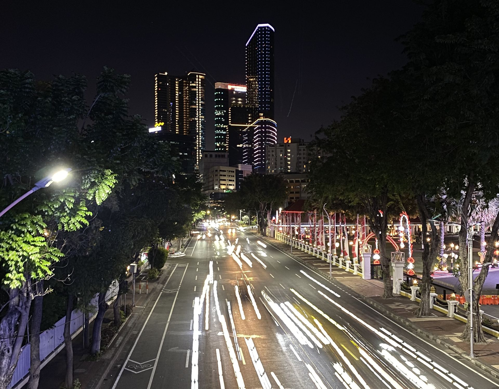
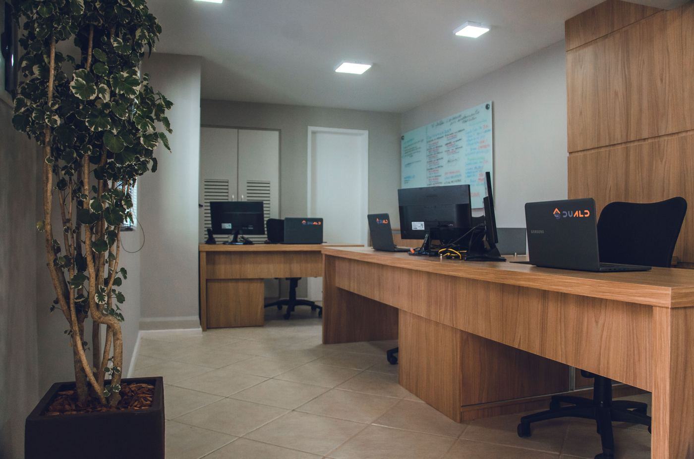

Mitra terpercaya untuk legalitas, perizinan, dan pertumbuhan bisnis Anda.
PT Anara Business International (ANBI Consulting) membantu pelaku usaha dari UMKM hingga perusahaan internasional mengurus legalitas, kepatuhan, dan administrasi bisnis secara lengkap dalam satu pintu.
Melampaui sekadar perizinan — membangun fondasi bisnis yang kuat.
PT Anara Business International (ANBI Consulting) adalah perusahaan konsultan bisnis dan perizinan yang berbasis di Sidoarjo, Jawa Timur. Kami membantu pelaku usaha dari UMKM hingga perusahaan internasional mengurus legalitas, kepatuhan, dan administrasi bisnis secara lengkap dalam satu pintu.
Fokus Kami
Menjadi mitra jangka panjang bagi UMKM dan perusahaan di Indonesia dalam mengurus legalitas dan kepatuhan usaha.
Cara Kami Bekerja
Pendampingan personal, kesepakatan tertulis yang jelas, dan pembaruan progres secara berkala di setiap penugasan.
Jaringan Mitra
Didukung jaringan konsultan dan spesialis mulai dari perizinan industri hingga layanan konsultan profesional lainnya.

Layanan Kami
Solusi satu pintu untuk kebutuhan legalitas dan administrasi bisnis Anda
Mari Bekerja Sama
Konsultasikan kebutuhan legalitas dan pengembangan bisnis Anda bersama kami.
Konsultasikan Kebutuhan AndaKami Melayani Berbagai Bentuk dan Skala Usaha.
Mengapa ANBI
Fokus pada Solusi
Layanan yang dirancang sesuai skala dan anggaran usaha kecil-menengah-tinggi.
Biaya Transparan
Penawaran tertulis di awal — tanpa biaya tersembunyi.
Proses Jelas & Terukur
Tahapan kerja dan estimasi waktu disepakati sejak awal.
Pendampingan Personal
Satu konsultan yang memahami bisnis Anda dari awal sampai selesai.
Jaringan Mitra Ahli
Bekerja sama dengan spesialis berpengalaman di tiap bidang perizinan.
Kepatuhan Terjaga
Semua pengurusan mengikuti ketentuan dan regulasi yang berlaku.
Satu Pintu
Dari pendirian, perizinan, pajak, hingga SDM — cukup satu mitra.
Dekat dengan Anda
Berbasis di Sidoarjo, melayani Jawa Timur dan seluruh Indonesia.
Alur Kerja Kami
Proses yang sederhana, transparan, dan terdokumentasi
Konsultasi Awal
Kami memahami kebutuhan, kondisi, dan target usaha Anda.
Penawaran & Kesepakatan
Lingkup kerja, biaya, dan estimasi waktu disepakati secara tertulis.
Pengurusan & Update
Tim kami mengerjakan penugasan dengan pembaruan progres berkala.
Serah Terima & Pendampingan
Dokumen diserahkan lengkap, disertai pendampingan pasca-layanan.
Mengapa Legalitas Usaha Penting
Nilai yang Anda dapatkan ketika usaha Anda tertib legalitas dan kepatuhan.
Akses Pembiayaan
Membuka pintu kredit perbankan, investor, dan program pemerintah.
Tender & Kemitraan
Syarat utama mengikuti tender dan bermitra dengan perusahaan besar.
Kepercayaan Pelanggan
Usaha berbadan hukum lebih dipercaya pelanggan dan pemasok.
Perlindungan Hukum
Aset pribadi terpisah dari risiko usaha, kontrak lebih kuat.
Kepatuhan Pajak
Terhindar dari sanksi dan denda, laporan keuangan lebih rapi.
Siap Berkembang
Fondasi legal yang rapi memudahkan ekspansi dan penambahan cabang.
Mari Bekerja Sama
Konsultasikan kebutuhan legalitas dan pengembangan bisnis Anda bersama kami.
Konsultasikan Kebutuhan Anda